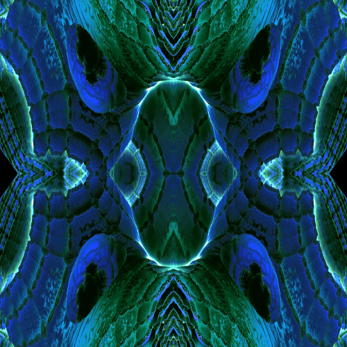
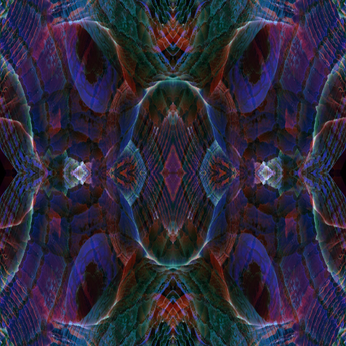
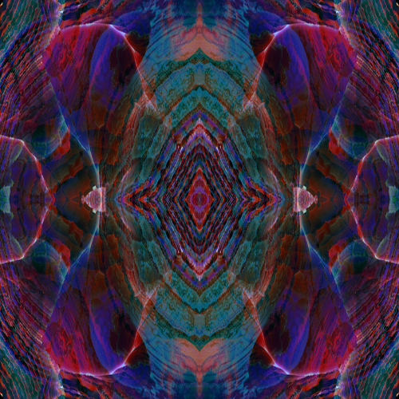
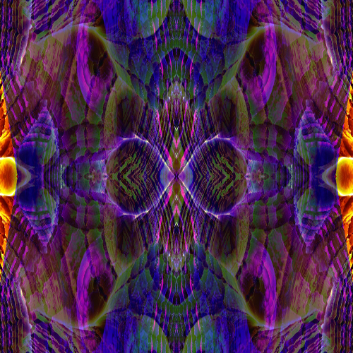
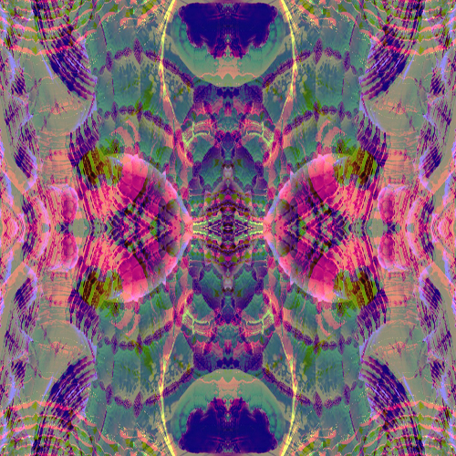
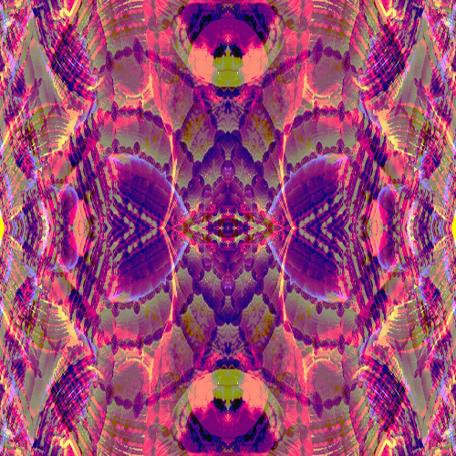
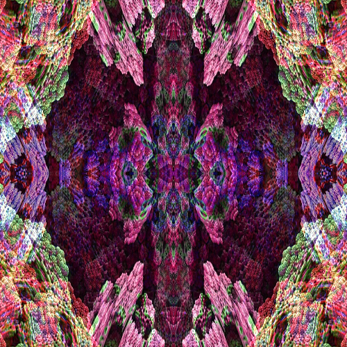
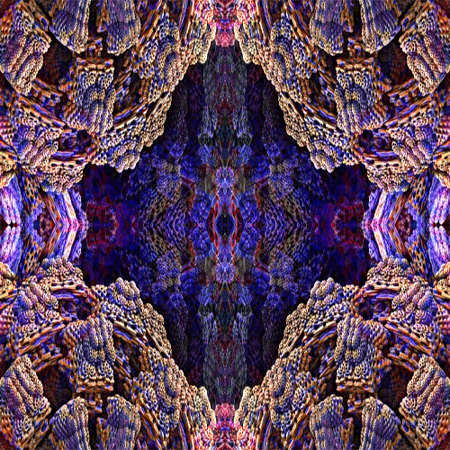
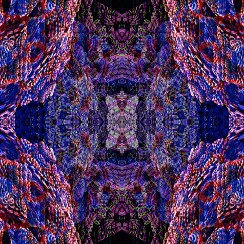

Just me myself and my soul exploring the universe of unknownment (bindu).
I have a heart of love and an interest of music, art, composing, coding, writing, playing life and communication. I want to share my world with You. Time comes into another relation.
The return of the Mayan consciousness in the spirit of the NOW. ❤
Let life be a school to you, the people your teachers,
the animals your friends and masters, . . . the whole world
a big boarding school.
Noone knows what will be next,
but it always depends on ((Y)our) mind.
View from the window of my study.
When I'm in the programming world, I forget the time. Occasionally my eyes need a break from work and I allow them to look outside.
However, the calm is deceptive. Agriculture is brisk here, and the heavy equipment is on the way early on.
But it´s okay with me. if everything was perfect, it bored after a time. I love it to work at night,
because then it's wonderful quiet outside.
I love to bathe in shapes and colors.
And I love the slide of the sun's rays with the raindrops and snow crystals in winter, which then illuminate in thousands of prisms. My "inner world" is full of it.
φ
In my early youth I preferred the pencil to the ballpoint pen, because I preferred to draw rather than follow a boring school lesson.
Imagine there was no light - there were no colors and the whole world was falling apart.
And every second the eye sees different motifs ....
I often wander through interesting terrain with my valued friend and musician colleague. I myself am still practicing the art of photography. It's a world of its own.
☺
The lighting conditions are different at every time of the day and season, which brings the study of who we are very close.
To be able to recognize the big in the tiny is a topic that should be focused.
•
Source: www.shz.de